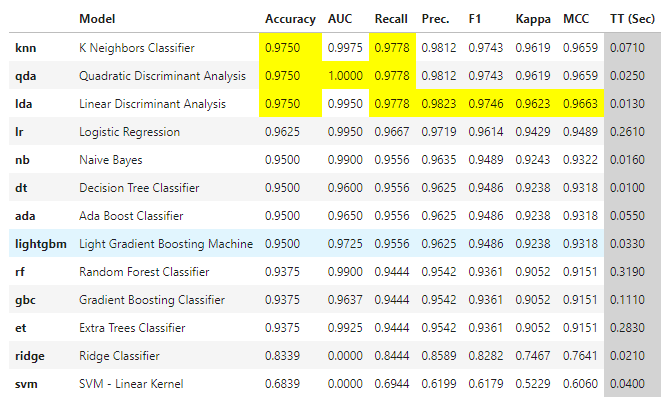
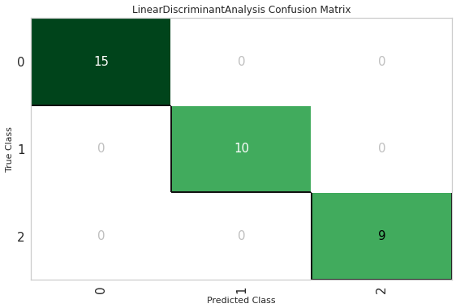
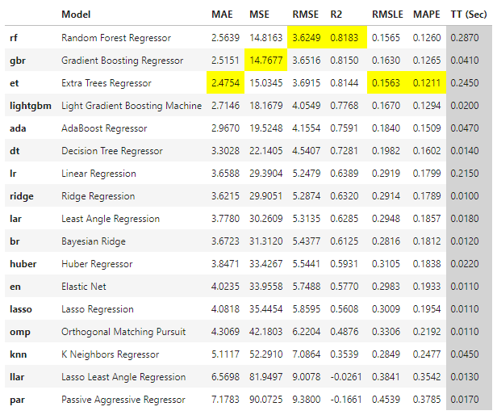
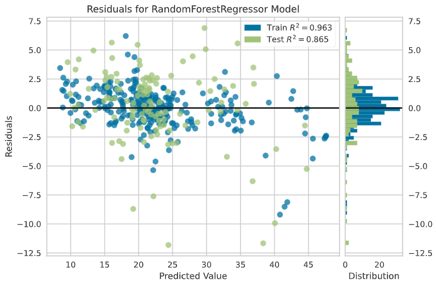
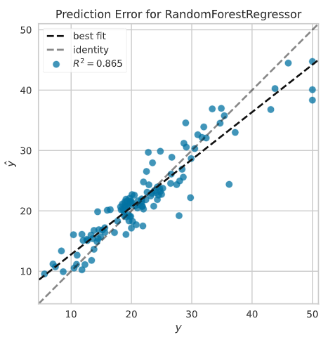
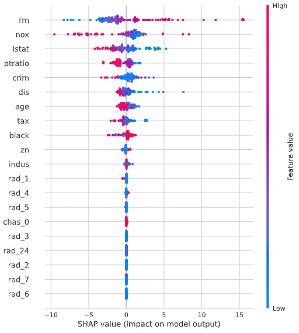
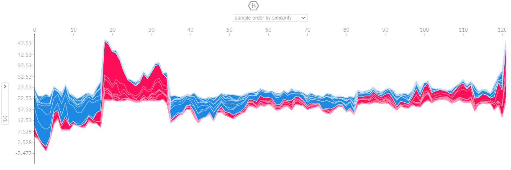

頑張らないために頑張る
ゆるく頑張ります
PyCaretをIrisやBostonで動かしてみる
概要
PyCaretとは、AutoMLをサポートしたPythonの機械学習ライブラリです。AutoMLはというと、ある程度定型化されているような機械学習モデルの作成作業を自動化する仕組みのことです。
PyCaret自体は、scikit-learnやOptuna、Hyperoptなどの機械学習ライブラリのラッパー的な位置づけ。もちろん、LightGBMやCatboostにようなアルゴリズムもばっちりサポート。
scikit-learnで実装すると何行も書かなければならないようなモデルの学習ロジックを数行で実装できたり、本来matplotlibやseabornなどを使って描画するようなグラフもPyCaretでは1行で描画できたりと、とにかく機械学習における作業サイクルを簡素化して生産性向上に全振りしてる印象。しかも、PyCaret自体を実行するときも煩雑なコードを書く必要はまったくないのがすごい。
ここでは機械学習の代表的なデータを使って、PyCaretの使い方を見てみます。
PyCaretをIrisデータで使ってみる
クラス分類では、毎度おなじみIris（アヤメ）のデータを使って、ざっくりPyCaretを実行してみます。
インストールは、こちらも毎度おなじみpipを使います。
pip install pycaretPyCaretのインストールは上記を実行しておきましょう。
なお、上記のコマンドでインストールされるPyCaretはSlim Versionであるため、一部の依存関係にあるライブラリをスキップしているようです。顕著に影響が出てくるケースがinterpert_model()あたりを実行する場合で、「XXXのライブラリがインストールされてないぞー」みたいなエラーが出てきたりますが、まぁ今回は気にしないでいきます。
pip install pycaret[full]上記のコマンドを実行することで、PyCaretのFull Versionがインストールされます。
import pandas as pd
import numpy as np
from sklearn.datasets import load_iris
from sklearn.model_selection import train_test_split
from pycaret.classification import *まずはライブラリ読み込み。
ここではscikit-learnのload_iris()を使うのでimportしておきます。今回はクラス分類モデルの作成なのでpycaret.classificationを参照します。回帰モデルを作成する場合は別なクラスが用意されているのでそちらを参照します。
ちなみに後で気付いたのですが、PyCaretは代表的なデータを自分自身で提供している（ここでPyCaretが提供しているデータを確認できる）ので、わざわざscikit-learnをインポートする必要はなかったんだよなぁ・・・。
iris = load_iris()
x = pd.DataFrame(data=iris.data, columns=iris.feature_names)
y = pd.Series(data=iris.target, name='Species')次にirisのデータをロードします。
train_X, test_X, train_y, test_y = train_test_split(x, y)
train = pd.concat([train_X, train_y], axis=1)
test = pd.concat([test_X, test_y], axis=1)学習に使うトレーニングデータと、モデルを作ったあとの検証に使うテストデータを分けておきます。なお、ここでは説明変数と目的変数を1つのデータセットとして結合していますが、これは後で実行するPyCaretのセットアップで利用するため。
clf1 = setup(
data=train,
target='Species',
session_id=123,
log_experiment=True,
experiment_name='work_iris'
)PyCaretのセットアップを実行します。目的変数と説明変数を含んだトレーニングデータを渡し、targetで目的変数を指定します。session_id以降は任意。ログは正直なくてもいいけど、今回はどんなことをしているかを見たかったので出力するような設定にしています。実際のところ、めちゃくちゃ長いログが出てくるので、必要じゃない場合はわざわざ出力することないと思うけど・・・。
| Description | Value | |
|---|---|---|
| 0 | session_id | 123 |
| 1 | Target | Species |
| 2 | Target Type | Multiclass |
| 3 | Label Encoded | 0: 0, 1: 1, 2: 2 |
| 4 | Original Data | (112, 5) |
| 5 | Missing Values | FALSE |
| 6 | Numeric Features | 4 |
| 7 | Categorical Features | 0 |
| 8 | Ordinal Features | FALSE |
| 9 | High Cardinality Features | FALSE |
| 10 | High Cardinality Method | None |
| 11 | Transformed Train Set | (78, 4) |
| 12 | Transformed Test Set | (34, 4) |
| 13 | Shuffle Train-Test | TRUE |
| 14 | Stratify Train-Test | FALSE |
セットアップを実行すると、こんな感じでパラメータが表示されます。ちなみに、長すぎるので上記では15行目以降を省略しています。
best_model = compare_models()次は各アルゴリズム別に学習モデルの比較を行います。上記のようにたった1行書くだけで、いろいろなアルゴリズムを1度に試せるのはすごい。

実行するとこんな感じに出力されます。精度によりソートされて、今回はknnなど複数のモデルの精度が一番良かったことになります。ただし、この結果はあくまでこのときの結果でしかないので、もう1回実行すると別なアルゴリズムの良い結果が出たりします（とくにsession_idを指定していないとき）。ただ、後述するハイパーパラメータのチューニングをここでは考慮していない（はず）なので、参考程度に考えておきましょう。
lda = create_model('lda')さっきのはモデル別の比較だったので、今度は実際に学習モデルを作成してグラフをプロットしてみます。上記の1文を実行することでモデル作成が可能。スゲー。
plot_model(lda, plot='confusion_matrix')
モデル作成に限らず、グラフの描画も1行で可能。至れり尽くせりですねぇ。それから、plotに渡す文字列を変えて描画するグラフを変更できます。
- Area Under the Curve：‘auc’
- Discrimination Threshold：‘threshold’
- Precision Recall Curve：‘pr’
- Confusion Matrix：‘confusion_matrix’
- Class Prediction Error：‘error’
これはクラス分類時に出力できるグラフの一例。回帰モデルやクラスタリングの場合は、また別のグラフが別途用意されています。とりあえずこれ以上必要？というくらい用意されているので、PyCaretをimportしておけば大体事足りるんじゃなかろうか。別途matplotlibが必要になるケースは、グラフに何かしら線などを直接描画したい、表示形式を細かく指定したいとかのシチュエーションしか思いつかないなぁ。まぁ、それはそれで重要なニーズなのですが。
models()この関数を実行すると、比較可能なアルゴリズムの一覧が出力されます。
| ID | Name | Reference | Turbo |
|---|---|---|---|
| lr | Logistic Regression | sklearn.linear_model._logistic.LogisticRegression | TRUE |
| knn | K Neighbors Classifier | sklearn.neighbors._classification.KNeighborsCl… | TRUE |
| nb | Naive Bayes | sklearn.naive_bayes.GaussianNB | TRUE |
| dt | Decision Tree Classifier | sklearn.tree._classes.DecisionTreeClassifier | TRUE |
| svm | SVM - Linear Kernel | sklearn.linear_model._stochastic_gradient.SGDC… | TRUE |
| rbfsvm | SVM - Radial Kernel | sklearn.svm._classes.SVC | FALSE |
| gpc | Gaussian Process Classifier | sklearn.gaussian_process._gpc.GaussianProcessC… | FALSE |
| mlp | MLP Classifier | sklearn.neural_network._multilayer_perceptron…. | FALSE |
| ridge | Ridge Classifier | sklearn.linear_model._ridge.RidgeClassifier | TRUE |
| rf | Random Forest Classifier | sklearn.ensemble._forest.RandomForestClassifier | TRUE |
| qda | Quadratic Discriminant Analysis | sklearn.discriminant_analysis.QuadraticDiscrim… | TRUE |
| ada | Ada Boost Classifier | sklearn.ensemble._weight_boosting.AdaBoostClas… | TRUE |
| gbc | Gradient Boosting Classifier | sklearn.ensemble._gb.GradientBoostingClassifier | TRUE |
| lda | Linear Discriminant Analysis | sklearn.discriminant_analysis.LinearDiscrimina… | TRUE |
| et | Extra Trees Classifier | sklearn.ensemble._forest.ExtraTreesClassifier | TRUE |
| lightgbm | Light Gradient Boosting Machine | lightgbm.sklearn.LGBMClassifier | TRUE |
ここではクラス分類を行っているので、クラス分類用のアルゴリズムの一覧が出てきます。
pred_holdouts = predict_model(lda)
pred_holdouts.head()作成したモデルについて、実データと予測値の比較がこのコードで可能です。ここでは、先ほど作ったldaモデルについて実行しています。
best = automl(optimize='Recall')
bestAutoMLで最適なモデルを作成します。
LinearDiscriminantAnalysis(n_components=None, priors=None, shrinkage=None,
solver='svd', store_covariance=False, tol=0.0001)ldaが選択されて、最適と思われるパラメータが出力されています。
predict_test = predict_model(best, data=test)
predict_test.head()先ほど選択した最良モデルbestを使って検証を行うには、上記のコードでテスト用データを渡せばオーケー。しかしホントに書く量が少ないなー。
| sepal length (cm) | sepal width (cm) | petal length (cm) | petal width (cm) | Species | Label | Score | |
|---|---|---|---|---|---|---|---|
| 131 | 7.9 | 3.8 | 6.4 | 2 | 2 | 2 | 0.9946 |
| 85 | 6 | 3.4 | 4.5 | 1.6 | 1 | 1 | 0.9989 |
| 26 | 5 | 3.4 | 1.6 | 0.4 | 0 | 0 | 1 |
| 70 | 5.9 | 3.2 | 4.8 | 1.8 | 1 | 2 | 0.8861 |
| 69 | 5.6 | 2.5 | 3.9 | 1.1 | 1 | 1 | 1 |
実行するとこんな感じでテストデータに対する予測結果が出力されます。Speciesまでの列がテストデータに含まれる内容で、Label以降が予測結果です。
save_model(best, model_name='work_best_model')作成したモデルはpkl形式で保存が可能です。save_model()の第1引数に保存対象のモデルを、第2引数に保存する出力先ファイル名（拡張子は不要）を記述します。
loaded_best = load_model('work_best_model')
print(loaded_best)保存ができればロードももちろん可能。load_model()を使えば保存したモデルをロードできます。
ここまでで、IrisのデータでPyCaretをざっくり動かしてみました。機械学習のモデル作成を行う際にだいたい手癖でやっているような、定型的な作業をすこぶる少ないコードを実行してくれるし、本来scikit-learnをimportするなどして書いていたコードより見通しのいいコードになりますね。結果の比較も簡単でベストなモデルの生成も可能と、おおよそ必要な機能がしっかり揃っています。
PyCaretをBostonデータで使ってみる
今度は、Bostonデータでも同様にPyCaretを使ってみます。基本的には、irisデータでやっていたこととほぼ同じ。多少読み込むライブラリが異なる程度なので、その辺りだけ気にすればオーケーです。
from sklearn.model_selection import train_test_split
from pycaret.regression import *
from pycaret.datasets import get_data
data = get_data('boston')pycaret.regressionを読み込んでいますが、これがirisのときと異なる点。irisのクラス分類と異なり、bostonデータは回帰であるためそれ用のライブラリを読み込む必要があります。
また、ここではIrisのときとは異なりbostonデータをPyCaret本体から取得するため、pycaret.datasets.get_data()をインポートしています。
train = data.sample(frac=0.8, random_state=0).reset_index(drop=True)
test = data.drop(train.index)
reg = setup(data=train, target='medv', session_id=123)| Description | Value | |
|---|---|---|
| 0 | session_id | 123 |
| 1 | Target | medv |
| 2 | Original Data | (405, 14) |
| 3 | Missing Values | False |
| 4 | Numeric Features | 11 |
| 5 | Categorical Features | 2 |
| 6 | Ordinal Features | False |
| 7 | High Cardinality Features | False |
| 8 | High Cardinality Method | None |
| 9 | Transformed Train Set | (283, 21) |
| 10 | Transformed Test Set | (122, 21) |
| 11 | Shuffle Train-Test | True |
| 12 | Stratify Train-Test | False |
| 13 | Fold Generator | KFold |
| 14 | Fold Number | 10 |
クラス分類のときと同様に、setup()を実行することでPyCaretの環境をセットアップできます。なお、上記の実行結果は15行目以降を省略しています。
best_model = compare_models()相変わらず1行でモデルの比較が可能です。

models()上記を実行すると、今回は回帰のアルゴリズムが一覧出力されます。
| ID | Name | Reference | Turbo |
|---|---|---|---|
| lr | Linear Regression | sklearn.linear_model._base.LinearRegression | TRUE |
| lasso | Lasso Regression | sklearn.linear_model._coordinate_descent.Lasso | TRUE |
| ridge | Ridge Regression | sklearn.linear_model._ridge.Ridge | TRUE |
| en | Elastic Net | sklearn.linear_model._coordinate_descent.Elast… | TRUE |
| lar | Least Angle Regression | sklearn.linear_model._least_angle.Lars | TRUE |
| llar | Lasso Least Angle Regression | sklearn.linear_model._least_angle.LassoLars | TRUE |
| omp | Orthogonal Matching Pursuit | sklearn.linear_model._omp.OrthogonalMatchingPu… | TRUE |
| br | Bayesian Ridge | sklearn.linear_model._bayes.BayesianRidge | TRUE |
| ard | Automatic Relevance Determination | sklearn.linear_model._bayes.ARDRegression | FALSE |
| par | Passive Aggressive Regressor | sklearn.linear_model._passive_aggressive.Passi… | TRUE |
| ransac | Random Sample Consensus | sklearn.linear_model._ransac.RANSACRegressor | FALSE |
| tr | TheilSen Regressor | sklearn.linear_model._theil_sen.TheilSenRegressor | FALSE |
| huber | Huber Regressor | sklearn.linear_model._huber.HuberRegressor | TRUE |
| kr | Kernel Ridge | sklearn.kernel_ridge.KernelRidge | FALSE |
| svm | Support Vector Regression | sklearn.svm._classes.SVR | FALSE |
| knn | K Neighbors Regressor | sklearn.neighbors._regression.KNeighborsRegressor | TRUE |
| dt | Decision Tree Regressor | sklearn.tree._classes.DecisionTreeRegressor | TRUE |
| rf | Random Forest Regressor | sklearn.ensemble._forest.RandomForestRegressor | TRUE |
| et | Extra Trees Regressor | sklearn.ensemble._forest.ExtraTreesRegressor | TRUE |
| ada | AdaBoost Regressor | sklearn.ensemble._weight_boosting.AdaBoostRegr… | TRUE |
| gbr | Gradient Boosting Regressor | sklearn.ensemble._gb.GradientBoostingRegressor | TRUE |
| mlp | MLP Regressor | sklearn.neural_network._multilayer_perceptron…. | FALSE |
| lightgbm | Light Gradient Boosting Machine | lightgbm.sklearn.LGBMRegressor | TRUE |
rf = create_model('rf')
tuned_rf = tune_model(rf, optimize='RMSE')こちらも相変わらず1行でモデルの作成が可能。tune_model()は一度作成したモデルを、ハイパーパラメータをいじることで文字通りチューンします。
rfRandomForestRegressor(bootstrap=True, ccp_alpha=0.0, criterion='mse',
max_depth=None, max_features='auto', max_leaf_nodes=None,
max_samples=None, min_impurity_decrease=0.0,
min_impurity_split=None, min_samples_leaf=1,
min_samples_split=2, min_weight_fraction_leaf=0.0,
n_estimators=100, n_jobs=-1, oob_score=False,
random_state=123, verbose=0, warm_start=False)tuned_rfRandomForestRegressor(bootstrap=False, ccp_alpha=0.0, criterion='mse',
max_depth=8, max_features='sqrt', max_leaf_nodes=None,
max_samples=None, min_impurity_decrease=0.0001,
min_impurity_split=None, min_samples_leaf=2,
min_samples_split=5, min_weight_fraction_leaf=0.0,
n_estimators=240, n_jobs=-1, oob_score=False,
random_state=123, verbose=0, warm_start=False)チューニング後のモデルは、パラメータの設定値が微妙に変化しています。これがチューニングの成果。
plot_model(tuned_rf)
可視化もirisのときと一緒。
plot_model(tuned_rf, plot='error')
plot_model(tuned_rf, plot='feature')
lgbm = create_model('lightgbm')
tuned_lgbm = tune_model(lgbm, optimize='MAE')ここで今度はLightGBMを使ってモデルを作ってみます。
interpret_model(tuned_lgbm)
事前にSHAPのライブラリをpipを使ってインストールしておくと、モデル解釈のためのinterpret_model()などのSHAPに関する機能が利用できるようになります。
interpret_model(tuned_lgbm, plot='correlation', feature='nox')
interpret_model(tuned_lgbm, plot='reason')
best = automl(optimize='RMSE')
bestAutoMLもirisのときと同様に実行可能。
RandomForestRegressor(bootstrap=True, ccp_alpha=0.0, criterion='mse',
max_depth=None, max_features='auto', max_leaf_nodes=None,
max_samples=None, min_impurity_decrease=0.0,
min_impurity_split=None, min_samples_leaf=1,
min_samples_split=2, min_weight_fraction_leaf=0.0,
n_estimators=100, n_jobs=-1, oob_score=False,
random_state=123, verbose=0, warm_start=False)ランダムフォレストが選択され、最適だと思われるパラメータがセットされています。
pred_new = predict_model(best, data=test)
pred_new.head()先ほど選択した最良モデルbestを使って検証を行うには、上記のコードでテスト用データを渡します。
| crim | zn | indus | chas | nox | rm | age | dis | rad | tax | ptratio | black | lstat | medv | Label | |
|---|---|---|---|---|---|---|---|---|---|---|---|---|---|---|---|
| 405 | 67.92080 | 0.0 | 18.1 | 0 | 0.693 | 5.683 | 100.0 | 1.4254 | 24 | 666 | 20.2 | 384.97 | 22.98 | 5.0 | 6.369 |
| 406 | 20.71620 | 0.0 | 18.1 | 0 | 0.659 | 4.138 | 100.0 | 1.1781 | 24 | 666 | 20.2 | 370.22 | 23.34 | 11.9 | 12.977 |
| 407 | 11.95110 | 0.0 | 18.1 | 0 | 0.659 | 5.608 | 100.0 | 1.2852 | 24 | 666 | 20.2 | 332.09 | 12.13 | 27.9 | 28.149 |
| 408 | 7.40389 | 0.0 | 18.1 | 0 | 0.597 | 5.617 | 97.9 | 1.4547 | 24 | 666 | 20.2 | 314.64 | 26.40 | 17.2 | 15.711 |
| 409 | 14.43830 | 0.0 | 18.1 | 0 | 0.597 | 6.852 | 100.0 | 1.4655 | 24 | 666 | 20.2 | 179.36 | 19.78 | 27.5 | 24.216 |
最終列が予測結果です。
GPUをPyCaretで利用する
PyCaretは、モデルの学習やハイパーパラメータのチューニングについてGPUを利用可能です。ただし、デフォルト設定では無効になっているので、コードにてGPUの利用を明記する必要があります。また、アルゴリズムとPyCaretを利用するプラットフォームによっては追加のライブラリが必要になるケースがあるので注意。
clf1 = setup(
data=train,
target='Species',
use_gpu=True
)上記のようにsetup()実行時に、引数としてuse_gpu=Trueを指定することでGPUを使ったモデル学習が可能です。これはクラス分類や回帰でもAPIの利用方法は同一であるため、同様の指定で問題ありません。
追加のインストールが必要になるケースは下記の通り。
- LightGBM
- 追加のインストールが必要。
- Logistic Regression
- Ridge Classifier
- Random Forest
- K Neighbors Classifier
- K Neighbors Regressor
- SVM
- Linear Regression
- Ridge Regression
- Lasso Regression
- cuML >= 0.15が必要。
上記とは別に、データ数の条件などでGPUの利用の可否が分かれるケースもあります。
- CatBoost：データセットが50,000行以上の場合にのみGPUでの処理が有効になる。
なお、一応ドキュメントには以下のアルゴリズムついては追加インストールの必要なしと明記されているのでメモ。
- Extreme Gradient Boosting
- CatBoost：前述のとおり、データ数が50,000行以上という条件がある。
DockerコンテナでPyCaretを利用する
FROM python:3.7-slim
WORKDIR /app
ADD . /app
RUN apt-get update && apt-get install -y libgomp1
RUN pip install --trusted-host pypi.python.org -r requirements.txt
CMD pytest #replace it with your entry point.オフィシャルのドキュメントでは、上記のようなDockerfileをサンプルとして例示しています。必要なライブラリはrequirements.txtに記述します。基本的にはPythonのSlimを使えば問題なく動作すると思いますが、フルバージョンが必要な場合はFROM python:3.7とします。